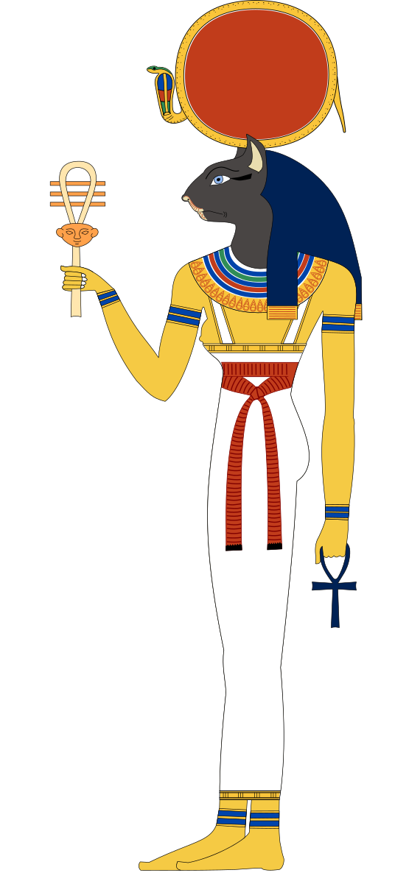
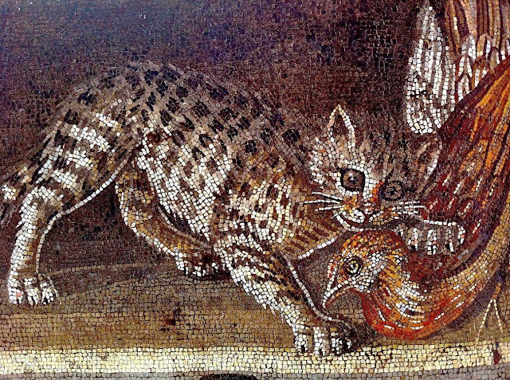
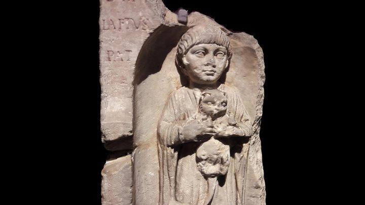
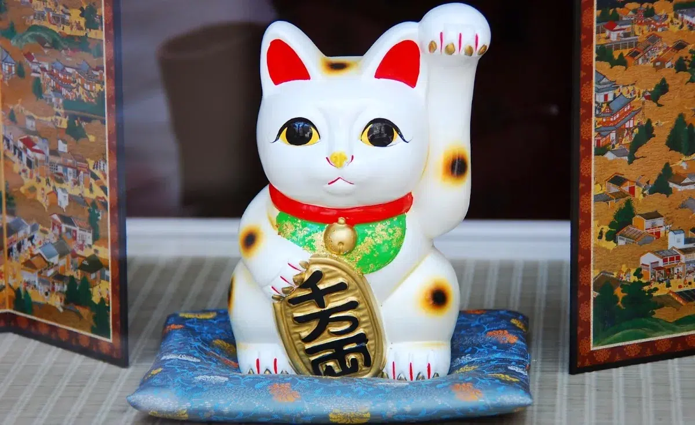
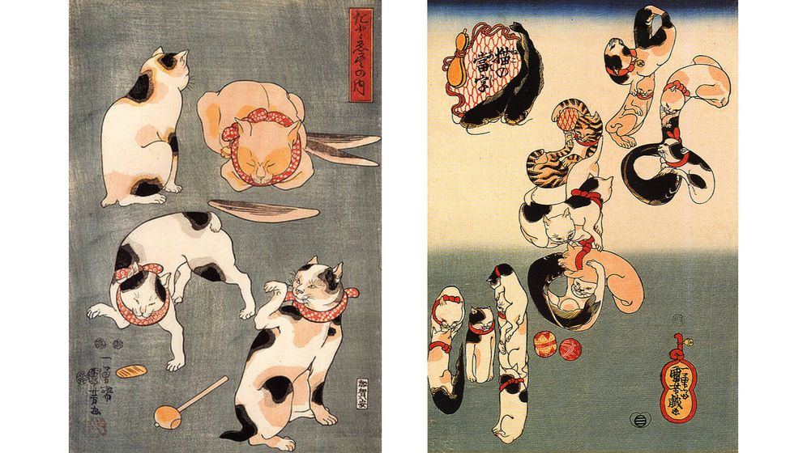
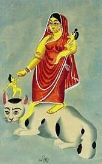

Antiguo Egipto
En el antiguo Egipto, los gatos eran venerados como criaturas sagradas y consideradas manifestaciones divinas, principalmente de la diosa Bastet, diosa del hogar, la armonía, la fertilidad y la protección. En algunos textos también se menciona que el dios del sol, Ra, podía tomar la forma de un gato gigante para luchar contra Apofis, el dios del caos.

Representación de la diosa Bastet
En los funerales, los gatos tenían una gran importancia, cuando un gato doméstico moría la familia guardaba luto, se afeitaban las cejas y el cuerpo del animal era embalsamado para ser enterrado con honores.
Gracias a la relación de los dioses y gatos, estos estaban protegidos por la ley, matar a un gato, incluso de forma accidental, podía ser castigado por la pena de muerte.
Aparte de su conexión con lo divino, los gatos cumplían la función de proteger las cosechas y los alimentos.
Roma y Grecia
En Roma, los gatos se popularizaron alrededor del siglo III a.C. a través del comercio con Egipto y Mesopotamia. Fueron introducidos por los griegos, quienes quedaron fascinados por estos animales cuando pasaron por Egipto, los griegos intentaron negociar con los egipcios pero se negaron por lo que robaron 6 parejas y posteriormente los vendieron a romanos, galos y celtas, lo que permitió que se extendieran por todo el Mediterráneo.
Los gatos pasaron de ser cazadores de plagas a compañeros valorados tanto por soldados como aristócratas. Se apreciaban principalmente por su utilidad contra ratones y ratas. Al eliminar a los roedores, también ayudaban a controlar la propagación de enfermedades como la peste bubónica, lo que protegía la salud pública.

Gato atacando a una codorniz, siglo I a.C.,

Estela funeraria romana del I d.C. con un gato doméstico.
En Roma, los gatos tenían conexión con deidades como Libertas, ya que esta diosa se asocia a la libertad, y a estos se les consideraba animales libres e independientes. Gracias a esta relación, se les permitía ingresar en los templos, algo que no se les permitía a otros animales. En Grecia, también tenían una conexión con una deidad, Artemisa diosa de la caza, a la cual se le atribuían características como la astucia y agilidad.
Asia
En Asia los gatos llegaron a través de la Ruta de la Seda alrededor del siglo II a.C., estos se convirtieron en símbolo de buena suerte, fortuna y serenidad.
En Japón, en el año 999 d.C. se le regaló al emperador Ichijō en su decimotercer cumpleaños un gato, lo que marcó el punto en el que estos comenzaron a ser considerados más como mascotas valiosas y se les asociaba a la realeza. Uno de los talismanes más representativos de Japón es el maneki-neko (gato que invita) esta es una figura de un gato con la pata levantada, esta figura es utilizada para atraer la buena suerte.

Maneki Neko, el gato japonés de la suerte 🐱

Grabados en madera de gatos, entre 1841 y 1843
Mientras que en India se les vinculaba con la diosa Shashthi, diosa que representa la pureza espiritual y la iluminación divina, se creía que la diosa podía tomar forma de un gato. Por otro lado, para alejar a los roedores se hacían estatuas pequeñas de gatos para ponerlas como lámparas y de este modo ahuyentarlos.

Diosa Shashthi